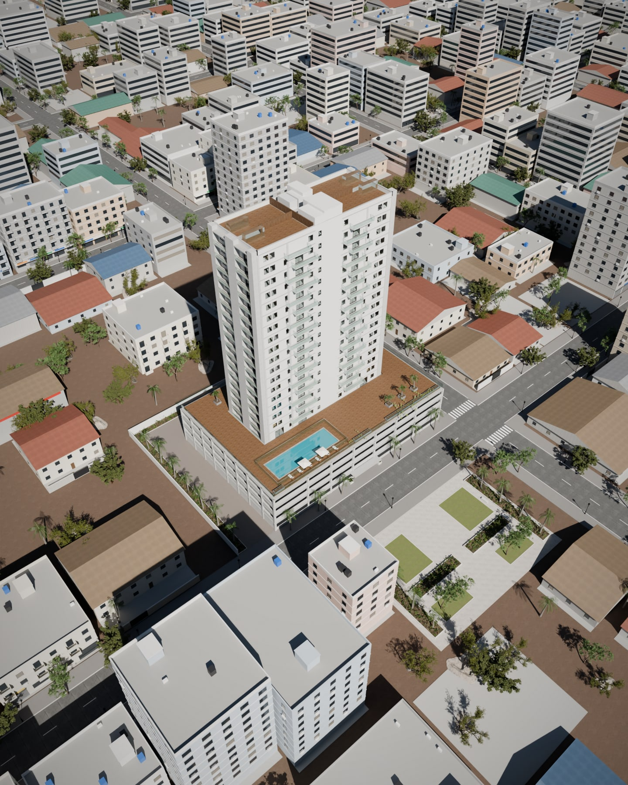
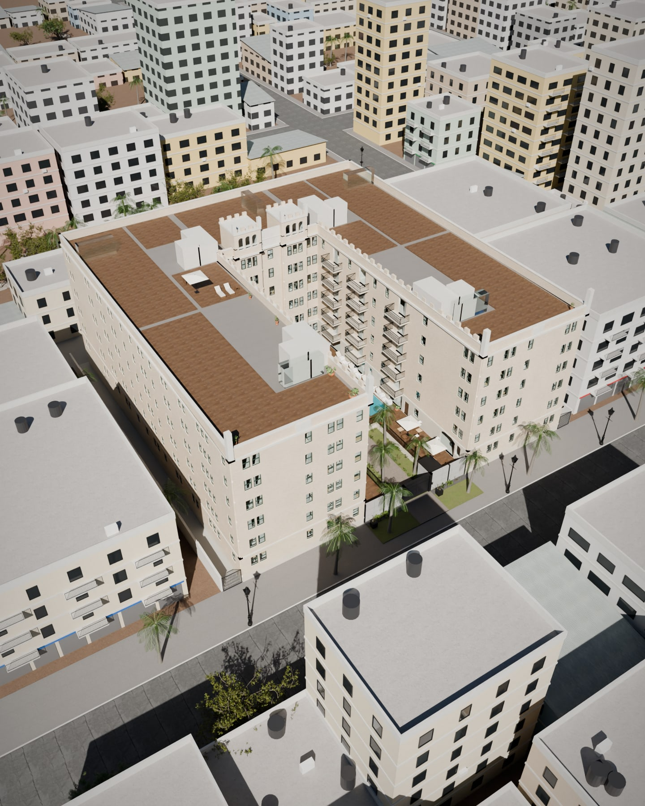
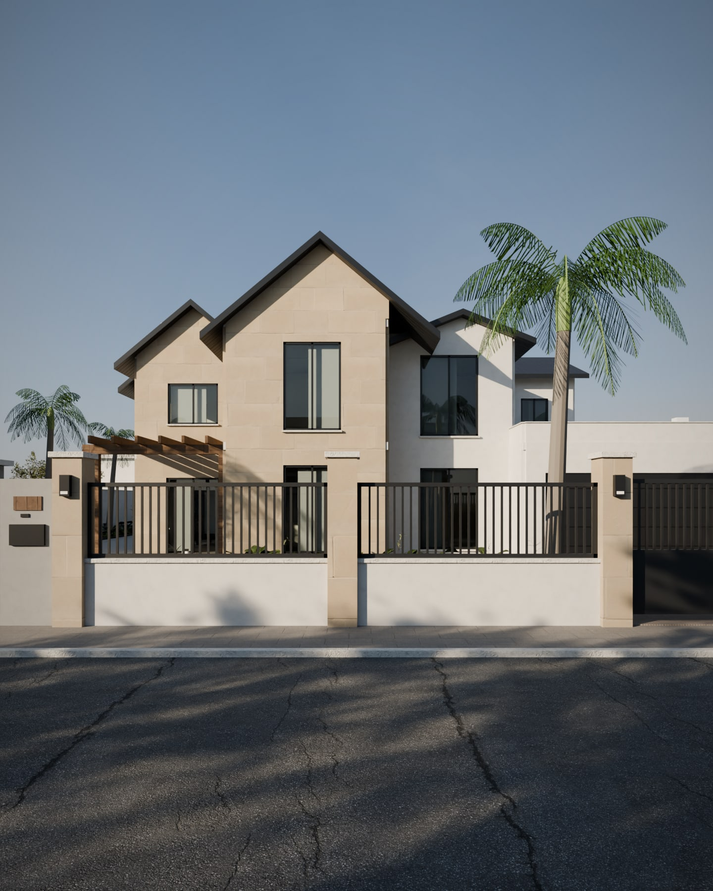
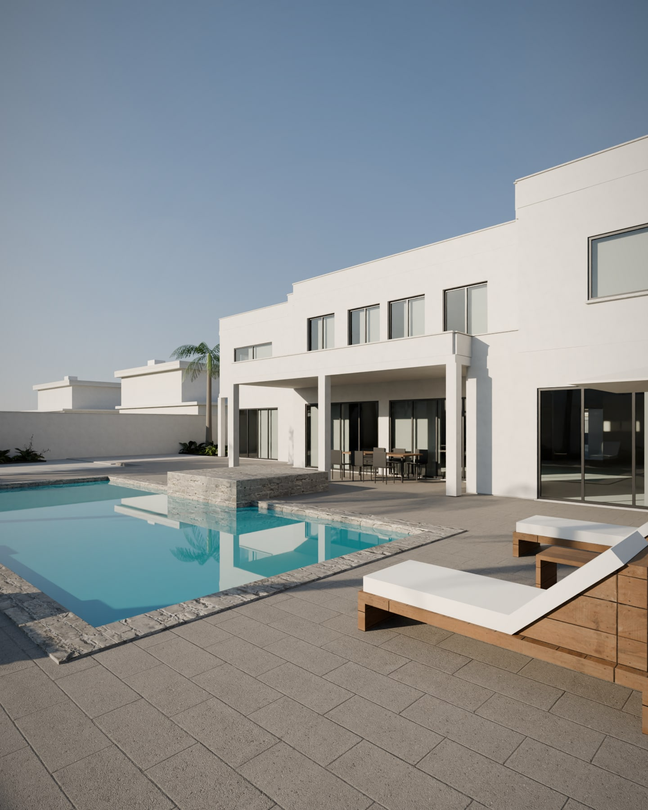

Conception & fabrication
Du modèle 3D à l’ouvrage fabriqué
Mobilier, équipements, machines et structures en acier.
SUJO Engineering Consulting
Conception & fabrication
Mobilier, équipements, machines et structures en acier.
Architecture
Maisons, immeubles et écoles, plans et rendus 3D.
Sourcing d’équipements
Machines et équipements, choisis sans attache fabricant.
Projets

Tour de logements
Tour de logements sur un socle de parking : huit logements par étage, des T3 et des T4 d’angle, quatre penthouses de cinq chambres au dernier niveau, et sur le toit une piscine et un salon vitré.
172 logements · Tour 40 × 40 m, 23 niveaux · Socle 50 × 40 m : sous-sol et 3 niveaux de parking

Tour de logements
Tour de dix-huit niveaux sur un socle de quatre niveaux de parking. Le toit du socle accueille les espaces communs, une terrasse et une piscine ; T3 et T4 aux étages courants, quatre penthouses au sommet.
100 logements · Tour 40 × 16 m, 18 niveaux · Socle 62 × 42 m, 4 niveaux de parking

Logements collectifs
Immeuble de logements en U autour d’une cour plantée avec piscine. Façades en brique sur soubassement en pierre, tourelles d’angle sur la cour, logements du studio au T3 et penthouses au dernier niveau ; café, salle de sport et espaces communs au rez-de-chaussée, parking en sous-sol.
R+5 sur sous-sol · Emprise 49 × 52,5 m · Cour 16 × 36 m avec piscine

Équipement scolaire
École de trois niveaux sur un terrain d’angle : accueil, bureaux et cantine au rez-de-chaussée, salles de classe et laboratoire aux étages, brise-soleil en bois sur la façade des classes. La cour accueille une aire de jeux et une piscine d’apprentissage ; la toiture porte des panneaux photovoltaïques.
170 places d’élèves · Emprise 12,5 × 24 m · Piscine d’apprentissage 9 × 5 m

Maison de ville
Maison de ville sur trois niveaux et sous-sol, avec garage, balcons sur rue et toit-terrasse aménagé. Une ossature en béton armé simple et régulière, des fondations aux dalles.
Sous-sol + R+2 + toit-terrasse · Emprise 9,9 × 11,6 m · Ossature béton armé

Villa
Villa à toitures en pente, pierre et enduit blanc en façade, pergola d’entrée et garage. À l’arrière, un patio couvert ouvre sur le jardin et la piscine.
RDC + étage · 318,6 m² habitables · Emprise 18,3 × 17,3 m

Villa
Grande villa sur sous-sol, avec garage trois places sur la cour d’entrée et séjour en double hauteur. À l’arrière, une terrasse couverte, la piscine et un spa surélevé.
Sous-sol + RDC + étage · Emprise 22 × 26 m · Piscine et spa
Ce que les entreprises et organismes publics nous demandent le plus souvent avant de nous confier un projet.
Nous réunissons l’ingénierie et la fourniture d’équipements dans une même société basée à Kinshasa, avec une connaissance pratique des conditions d’exploitation, des délais et des contraintes d’approvisionnement locales.
Conception technique & fabrication, Architecture, Sourcing d’équipements.
Construction & génie civil, Mines, carrières & industries extractives, Énergie, électricité & hydroélectricité, Pétrole & gaz, Industrie manufacturière & unités de production, Eau, assainissement & traitement des eaux usées, Logistique, manutention & équipements ferroviaires, Administration publique & projets d’infrastructure, Installations Industrielles & Maintenance des Équipements.
Les deux. Notre offre va de la pièce détachée unique jusqu’au package clé en main : machines, équipements et systèmes industriels, avec installation, mise en service et pièces de première dotation.
Non. Nous ne sommes liés à aucun fabricant : l’équipement que nous recommandons et fournissons est choisi sur son mérite technique et son coût rendu.
Kinshasa, avec capacité de déploiement dans les autres provinces de la RDC selon les besoins du projet.